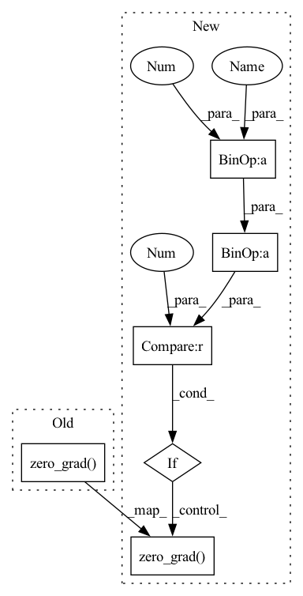

Pattern ID :37487
Before Change
for batch_idx, (data, target) in enumerate(self.data_loader):
data, target = data.to(self.device), target.to(self.device)
self.optimizer.zero_grad()
output = self.model(data)
loss = self.criterion(output, target)
loss.backward()
self.optimizer.step()After Change
loss = self.criterion(output, target)
loss = loss / self.accumulation_steps
loss.backward()
if (batch_idx+1) % self.accumulation_steps == 0 :
self.optimizer.step()
self.optimizer.zero_grad()
self._logging(batch_idx, epoch, data, output, target, loss)
if batch_idx == self.len_epoch:In pattern: SUPERPATTERN
Frequency: 3
Non-data size: 6
Instances Fragment ID: 108005584
Project Name: lehduong/knowledge-distillation-by-replacing-cheap-conv
Commit Name: 6a2fac62789427919e4a6d91296bdb0801eecb79
Time: 2020-01-20
Author: oopsxilitol@gmail.com
File Name: trainer/trainer.py
M Class Name: Trainer
N Class Name: Trainer
M Method Name: _train_epoch(2)
N Method Name: _train_epoch(2)
M Parent Class: BaseTrainer
N Parent Class: BaseTrainer
M File Name: trainer/trainer.py
N File Name: trainer/trainer.py
M Start Line: 117
M End Line: 121
N Start Line: 68
N End Line: 79
Before Change
// accumulated_batches = 4 // accumulate gradient for 4 batches before stepping optimizer
// if ((i+1) % accumulated_batches == 0) or (i == len(dataloader) - 1):
optimizer.step()
optimizer.zero_grad()
// Compute running epoch-means of tracked metrics
ui += 1
metrics += model.losses["metrics"]After Change
rloss = defaultdict(float) // running loss
metrics = torch.zeros(3, num_classes)
optimizer.zero_grad()
for i , (imgs, targets) in enumerate(dataloader):
if sum([len(x) for x in targets]) < 1: // if no targets continue
continue
// SGD burn-in
if (epoch == 0) & (i <= 1000):
lr = 1e-3 * (i / 1000) ** 4
for g in optimizer.param_groups:
g["lr"] = lr
// Compute loss, compute gradient, update parameters
loss = model(imgs.to(device), targets, requestPrecision=True)
loss.backward()
accumulated_batches = 4 // accumulate gradient for 4 batches before stepping optimizer
if ((i+1) % accumulated_batches == 0) or (i == len(dataloader) - 1):
optimizer.step()
optimizer.zero_grad()
// Compute running epoch-means of tracked metrics
ui += 1
metrics += model.losses["metrics"] Fragment ID: 108005586
Project Name: nightsnack/yolobile
Commit Name: 6e5da1ce274abf9d22815eac04ae6aa16a2209b8
Time: 2018-11-05
Author: glenn.jocher@ultralytics.com
File Name: train.py
M Class Name: AnonimousClass
N Class Name: AnonimousClass
M Method Name: main(1)
N Method Name: main(1)
M Parent Class:
N Parent Class:
M File Name: train.py
N File Name: train.py
M Start Line: 133
M End Line: 134
N Start Line: 45
N End Line: 137
Before Change
for batch_idx, (data, target) in enumerate(self.data_loader):
data, target = data.to(self.device), target.to(self.device)
self.optimizer.zero_grad()
output_tc = self.teacher(data)
output_tc = torch.tensor(output_tc.detach().cpu().numpy()).cuda()
After Change
self.student.train()
self.train_metrics.reset()
for batch_idx , (data, target) in enumerate(self.data_loader):
data, target = data.to(self.device), target.to(self.device)
output_tc = self.teacher(data)
// TODO: Find an elegant way to free the feature map and computation graph
output_tc = torch.tensor(output_tc.detach().cpu().numpy()).cuda()
output_st = self.student(data)
supervised_loss = self.criterion(output_st, target)
kd_loss = self.kd_criterion(output_st, output_tc)
loss = (1 - self.lamb) * supervised_loss + self.lamb* kd_loss
loss = loss / self.accumulation_steps
loss.backward()
if (batch_idx+1) % self.accumulation_steps == 0 :
self.optimizer.step()
self.optimizer.zero_grad()
self.writer.set_step((epoch - 1) * self.len_epoch + batch_idx)
self.train_metrics.update("loss", loss.item())
for met in self.metric_ftns: Fragment ID: 108005582
Project Name: lehduong/knowledge-distillation-by-replacing-cheap-conv
Commit Name: 6a2fac62789427919e4a6d91296bdb0801eecb79
Time: 2020-01-20
Author: oopsxilitol@gmail.com
File Name: trainer/trainer.py
M Class Name: TrainerTeacherAssistant
N Class Name: TrainerTeacherAssistant
M Method Name: _train_epoch(2)
N Method Name: _train_epoch(2)
M Parent Class: BaseTrainer,BaseKnowledgeDistillationTrainer
N Parent Class: BaseTrainer,BaseKnowledgeDistillationTrainer
M File Name: trainer/trainer.py
N File Name: trainer/trainer.py
M Start Line: 215
M End Line: 234
N Start Line: 174
N End Line: 193